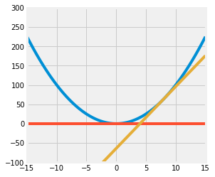

DATA100-lab01
|
|
Lab 01
Welcome to the first lab of Data 100! This lab is meant to help you familiarize yourself with JupyterHub, review Python and numpy, and introduce you to matplotlib, a Python visualization library.
To receive credit for a lab, answer all questions correctly and submit before the deadline.
This lab is due Tuesday, January 25 at 11:59 PM.
Lab Walk-Through
In addition to the lab notebook, we have also released a prerecorded walk-through video of the lab. We encourage you to reference this video as you work through the lab. Run the cell below to display the video.
|
|
Collaboration Policy
Data science is a collaborative activity. While you may talk with others about the labs, we ask that you write your solutions individually. If you do discuss the assignments with others please include their names below. (That’s a good way to learn your classmates’ names.)
Collaborators: list collaborators here
Part 1: Jupyter Tips
Viewing Documentation
To output the documentation for a function, use the help function.
|
|
[1;31mSignature:[0m [0mprint[0m[1;33m([0m[1;33m*[0m[0margs[0m[1;33m,[0m [0msep[0m[1;33m=[0m[1;34m' '[0m[1;33m,[0m [0mend[0m[1;33m=[0m[1;34m'\n'[0m[1;33m,[0m [0mfile[0m[1;33m=[0m[1;32mNone[0m[1;33m,[0m [0mflush[0m[1;33m=[0m[1;32mFalse[0m[1;33m)[0m[1;33m[0m[1;33m[0m[0m
[1;31mDocstring:[0m
Prints the values to a stream, or to sys.stdout by default.
sep
string inserted between values, default a space.
end
string appended after the last value, default a newline.
file
a file-like object (stream); defaults to the current sys.stdout.
flush
whether to forcibly flush the stream.
[1;31mType:[0m builtin_function_or_method
You can also use Jupyter to view function documentation inside your notebook. The function must already be defined in the kernel for this to work.
Below, click your mouse anywhere on the print block below and use Shift + Tab to view the function’s documentation.
|
|
Welcome to Data 100.
Importing Libraries and Magic Commands
In Data 100, we will be using common Python libraries to help us process data. By convention, we import all libraries at the very top of the notebook. There are also a set of standard aliases that are used to shorten the library names. Below are some of the libraries that you may encounter throughout the course, along with their respective aliases.
|
|
%matplotlib inline is a Jupyter magic command that configures the notebook so that Matplotlib displays any plots that you draw directly in the notebook rather than to a file, allowing you to view the plots upon executing your code. (Note: In practice, this is no longer necessary, but we’re showing it to you now anyway.)
Another useful magic command is %%time, which times the execution of that cell. You can use this by writing it as the first line of a cell. (Note that %% is used for cell magic commands that apply to the entire cell, whereas % is used for line magic commands that only apply to a single line.)
|
|
CPU times: total: 0 ns
Wall time: 0 ns
Keyboard Shortcuts
Even if you are familiar with Jupyter, we strongly encourage you to become proficient with keyboard shortcuts (this will save you time in the future). To learn about keyboard shortcuts, go to Help –> Keyboard Shortcuts in the menu above.
Here are a few that we like:
Ctrl+Return(orCmd+Returnon Mac): Evaluate the current cellShift+Return: Evaluate the current cell and move to the nextESC: command mode (may need to press before using any of the commands below)a: create a cell aboveb: create a cell belowdd: delete a cellz: undo the last cell operationm: convert a cell to markdowny: convert a cell to code
Part 2: Prerequisites
It’s time to answer some review questions. Each question has a response cell directly below it. Most response cells are followed by a test cell that runs automated tests to check your work. Please don’t delete questions, response cells, or test cells. You won’t get credit for your work if you do.
If you have extra content in a response cell, such as an example call to a function you’re implementing, that’s fine. Also, feel free to add cells between the question cells and test cells (or the next cell, for questions without test cases). Any extra cells you add will be considered part of your submission. Finally, when you finish an assignment, make sure to “restart and run all cells” to ensure everything works properly.
Note that for labs, ontime submissions that pass all the test cases will receive full credit. However for homeworks, test cells don’t always confirm that your response is correct. They are meant to give you some useful feedback, but it’s your responsibility to ensure your response answers the question correctly. There may be other tests that we run when scoring your notebooks. We strongly recommend that you check your solutions yourself rather than just relying on the test cells.
Python
Python is the main programming language we’ll use in the course. We expect that you’ve taken CS 61A, Data 8, or an equivalent class, so we will not be covering general Python syntax. If any of the following exercises are challenging (or if you would like to refresh your Python knowledge), please review one or more of the following materials.
- Python Tutorial: Introduction to Python from the creators of Python.
- Composing Programs Chapter 1: This is more of a introduction to programming with Python.
- Advanced Crash Course: A fast crash course which assumes some programming background.
NumPy
NumPy is the numerical computing module introduced in Data 8, which is a prerequisite for this course. Here’s a quick recap of NumPy. For more review, read the following materials.
- NumPy Quick Start Tutorial
- DS100 NumPy Review
- Stanford CS231n NumPy Tutorial
- The Data 8 Textbook Chapter on NumPy
Question 1
The core of NumPy is the array. Like Python lists, arrays store data; however, they store data in a more efficient manner. In many cases, this allows for faster computation and data manipulation.
In Data 8, we used make_array from the datascience module, but that’s not the most typical way. Instead, use np.array to create an array. It takes a sequence, such as a list or range.
Below, create an array arr containing the values 1, 2, 3, 4, and 5 (in that order).
|
|
|
|
q1
passed! üåü
In addition to values in the array, we can access attributes such as shape and data type. A full list of attributes can be found here.
|
|
np.int64(4)
|
|
array([3, 4])
|
|
(5,)
|
|
dtype('int64')
Arrays, unlike Python lists, cannot store items of different data types.
|
|
[1, '3']
|
|
array(['1', '3'], dtype='<U21')
|
|
array([5. , 8.3])
Arrays are also useful in performing vectorized operations. Given two or more arrays of equal length, arithmetic will perform element-wise computations across the arrays.
For example, observe the following:
|
|
[1, 2, 3, 4, 5, 6]
|
|
array([5, 7, 9])
Question 2
Question 2a
Write a function summation that evaluates the following summation for $n \geq 1$:
$$\sum_{i=1}^{n} i^3 + 3 i^2$$
Note: You should not use for loops in your solution. Check the NumPy documentation. If you’re stuck, try a search engine! Searching the web for examples of how to use modules is very common in data science.
|
|
|
|
q2a
passed! üíØ
Question 2b
Write a function elementwise_array_sum that computes the square of each value in list_1, the cube of each value in list_2, then returns a list containing the element-wise sum of these results. Assume that list_1 and list_2 have the same number of elements, do not use for loops.
The input parameters will both be python lists, so you may need to convert the lists into arrays before performing your operations. The output should be a numpy array.
|
|
|
|
q2b
passed! üåü
You might have been told that Python is slow, but array arithmetic is carried out very fast, even for large arrays. Below is an implementation of the above code that does not use NumPy arrays.
|
|
For ten numbers, elementwise_list_sum and elementwise_array_sum both take a similar amount of time.
|
|
|
|
CPU times: total: 0 ns
Wall time: 0 ns
[0, 2, 12, 36, 80, 150, 252, 392, 576, 810]
|
|
CPU times: total: 0 ns
Wall time: 0 ns
array([ 0, 2, 12, 36, 80, 150, 252, 392, 576, 810])
The time difference seems negligible for a list/array of size 10; depending on your setup, you may even observe that elementwise_list_sum executes faster than elementwise_array_sum! However, we will commonly be working with much larger datasets:
|
|
|
|
CPU times: total: 15.6 ms
Wall time: 33.2 ms
|
|
CPU times: total: 0 ns
Wall time: 557 μs
array([ 0, 2, 12, ...,
999920002099982, 999950000799996, 999980000100000])
With the larger dataset, we see that using NumPy results in code that executes over 50 times faster! Throughout this course (and in the real world), you will find that writing efficient code will be important; arrays and vectorized operations are the most common way of making Python programs run quickly.
Question 2c
Recall the formula for population variance below:
$$\sigma^2 = \frac{\sum_{i=1}^N (x_i - \mu)^2}{N}$$
Complete the functions below to compute the population variance of population, an array of numbers. For this question, do not use built in NumPy functions, such as np.var. Again, avoid using for loops!
|
|
|
|
---------------------------------------------------------------------------
NameError Traceback (most recent call last)
Cell In[1], line 1
----> 1 grader.check("q2c")
NameError: name 'grader' is not defined
Question 2d
Given the array random_arr, assign valid_values to an array containing all values $x$ such that $2x^4 > 1$.
Note: You should not use for loops in your solution. Instead, look at numpy’s documentation on Boolean Indexing.
|
|
|
|
q2d
passed! ✨
Part 3: Plotting
Here we explore plotting using matplotlib and numpy.
Question 3
Consider the function $f(x) = x^2$ for $-\infty < x < \infty$.
Question 3a
Find the equation of the tangent line to $f$ at $x = 0$.
Use LaTeX to type your solution, such that it looks like the serif font used to display the math expressions in the sentences above.
HINT: You can click any text cell to see the raw Markdown syntax.
$tangent line: 切线$
$y = 0$
Question 3b
Find the equation of the tangent line to $f$ at $x = 8$. Please use LaTeX to type your solution.
$y = 16x$
Question 3c
Write code to plot the function $f$, the tangent line at $x=8$, and the tangent line at $x=0$.
Set the range of the x-axis to (-15, 15) and the range of the y-axis to (-100, 300) and the figure size to (4,4).
Your resulting plot should look like this (it’s okay if the colors in your plot don’t match with ours, as long as they’re all different colors):
You should use the plt.plot function to plot lines. You may find the following functions useful:
|
|

Question 4 (Ungraded)
Data science is a rapidly expanding field and no degree program can hope to teach you everything that will be helpful to you as a data scientist. So it’s important that you become familiar with looking up documentation and learning how to read it.
Below is a section of code that plots a three-dimensional “wireframe” plot. You’ll see what that means when you draw it. Replace each # Your answer here with a description of what the line above does, what the arguments being passed in are, and how the arguments are used in the function. For example,
|
|
Hint: The Shift + Tab tip from earlier in the notebook may help here. Remember that objects must be defined in order for the documentation shortcut to work; for example, all of the documentation will show for method calls from np since we’ve already executed import numpy as np. However, since z is not yet defined in the kernel, z.reshape(x.shape) will not show documentation until you run the line z = np.cos(squared).
|
|

Question 5 (Ungraded)
Do you think that eating french fries with mayonnaise is a crime?
Tell us what you think in the following Markdown cell. :)
6 注意numpy版本并不是一一对应，返回种类发生变化
To double-check your work, the cell below will rerun all of the autograder tests.
|
|
q1 results: All test cases passed!
q2a results: All test cases passed!
q2b results: All test cases passed!
q2c results:
q2c - 1 result:
❌ Test case failed
Trying:
population_0 = np.random.randn(100)
Expecting nothing
ok
Trying:
np.isclose(mean(population_0), np.mean(population_0), atol=1e-6)
Expecting:
True
**********************************************************************
Line 2, in q2c 0
Failed example:
np.isclose(mean(population_0), np.mean(population_0), atol=1e-6)
Expected:
True
Got:
np.True_
q2c - 2 result:
❌ Test case failed
Trying:
population_0 = np.random.randn(100)
Expecting nothing
ok
Trying:
np.isclose(variance(population_0), np.var(population_0), atol=1e-6)
Expecting:
True
**********************************************************************
Line 2, in q2c 1
Failed example:
np.isclose(variance(population_0), np.var(population_0), atol=1e-6)
Expected:
True
Got:
np.True_
q2d results: All test cases passed!
Submission
Make sure you have run all cells in your notebook in order before running the cell below, so that all images/graphs appear in the output. The cell below will generate a zip file for you to submit. Please save before exporting!
|
|